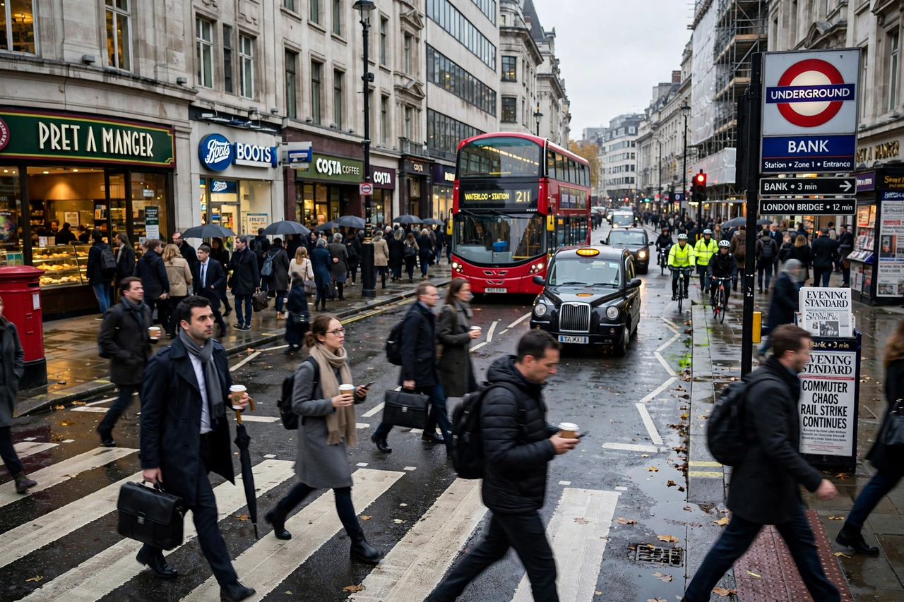

Top stories
Top stories from The Independent

The Independent, digital-only since closing its print edition in 2016, runs a high-volume homepage: UK and world news, US coverage for its American audience, sport, culture and the Voices comment section.
News
UK news and the day's headlines
The core news file.
Politics
Westminster and Whitehall
Political coverage.